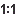

Revision Graph of an SVN Resource
The history of an SVN resource can be watched on a graphical representation of all the revisions of that resource together with the tags in which the resource was included. The graphical representation is identical to a tree structure and very easy to follow.
The graphical representation of a resource history is invoked with the  Revision graph
action available on the right-click menu of an SVN resource in the Working Copy view and the Repository view.
Revision graph
action available on the right-click menu of an SVN resource in the Working Copy view and the Repository view.

In every node of the revision graph an icon and the background color represent the type of operation that created the revision represented in that node. The commit message associated with that revision, the repository path, and the revision number are also contained in the node. The tooltip displayed when the mouse pointer hovers over a node specifies the URL of the resource, the SVN user who created the revision of that node, the revision number, the date of creation, the commit message, the modification type and the affected paths.
The types of nodes used in the graph are:
- Added resource
- The icon for a new resource added to the repository and a green background.
- Copied resource
- The
 icon for
a resource copied to other location (for example, when an SVN tag is created and a green
background).
icon for
a resource copied to other location (for example, when an SVN tag is created and a green
background). - Modified resource
- The icon for a modified resource and a blue background.
- Deleted resource
- The
 icon
for a resource deleted from the repository and a red background.
icon
for a resource deleted from the repository and a red background. - Replaced resource
- The
 icon
for a resource removed and replaced with another one on the repository and an orange
background.
icon
for a resource removed and replaced with another one on the repository and an orange
background. - Indirect resource
- The
 icon
for a revision from where the resource was copied or an indirectly modified resource,
that is a directory where a resource was modified and a gray background. The
Modification type field of the tooltip specifies how that revision was obtained
in the history of the resource.
icon
for a revision from where the resource was copied or an indirectly modified resource,
that is a directory where a resource was modified and a gray background. The
Modification type field of the tooltip specifies how that revision was obtained
in the history of the resource.
A directory resource is represented with two types of graphs:
- Simplified graph
- Lists only the changes applied directly to the directory;
- Complete graph
- Lists also the indirect changes of the directory resource, that is the changes applied to the resources contained in the directory.
The Revision graph toolbar contains the following actions:
 Save as
image
Save as
image- Saves the graphical representation as image. For a large revision graph you have to set more memory in the startup script. The default memory size is not enough when there are more than 100 revisions that are included in the graph.
- /Show/Hide indirect modifications
- Switches between simplified and complete graph.
- Zoom In
- Zooms in the graph.
 Zoom Out
Zoom Out- Zooms out the graph. When the font reaches its minimum size, the graph nodes will display only the icons, leading to a very compact representation of the graph.
- Reset scale
- Resets the graphical scale to a default setting.
- Prints the graph.
- Print preview
- Offers a preview of the graph to allow you to check the information to be printed.
The contextual menu of any of the graph nodes contains the following actions:
- Open
- Opens the selected revision in the editor panel. Available only for files.
- Open with
- Opens the selected revision in the editor panel. Available only for files.
- Save as
- Saves the file that had the revision graph generated, based on the selected node revision.
- Copy to
- Copies to the repository the item whose revision graph is displayed, using the
selected revision. Note: This action can be used to resurrect deleted items also.
- Compare with HEAD
- Compares the selected revision with the HEAD revision and displays the result in the diff panel. Available only for files.
 Show History
Show History- Displays the history of the resource in the History view. Available for both files and directories.
 Check out
Check out
- Checks out the selected revision of the directory. Available only for directories.
- Export
- Opens the Export dialog box that allows you to configure options for exporting a folder from the repository to the local file system.
When two nodes are selected in the revision graph of a file the right-click menu of this selection contains only the Compare for comparing the two revisions corresponding to the selected nodes. If the resource that had the revision graph built is a folder then the right-click menu displayed for a two nodes selection also contains the Compare action but it computes the differences between the two selected revisions as a set of directory changes. The result is displayed in the Directory Change Set view.